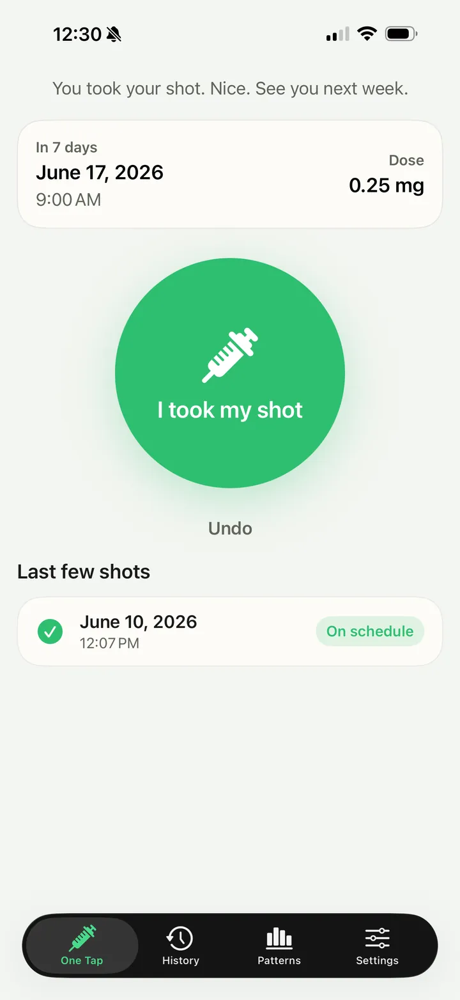
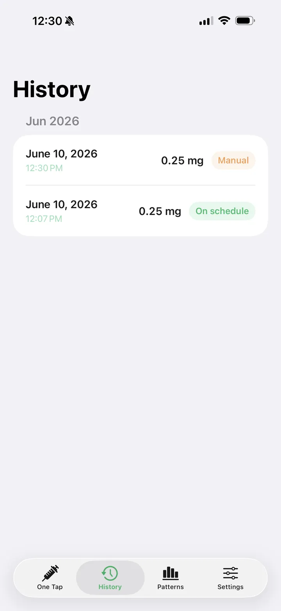
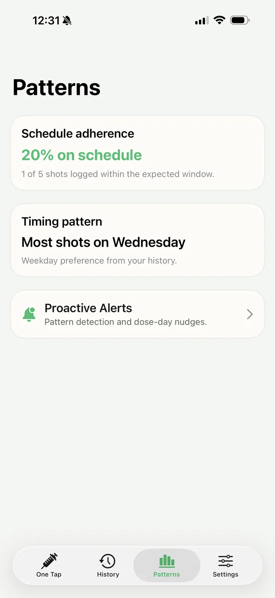
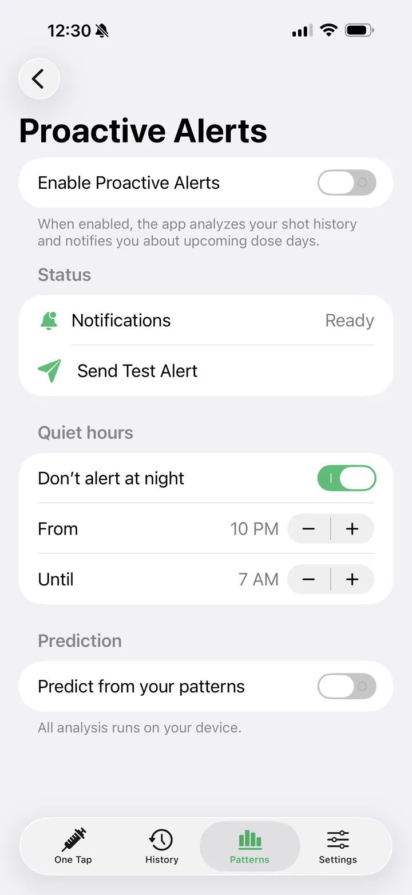
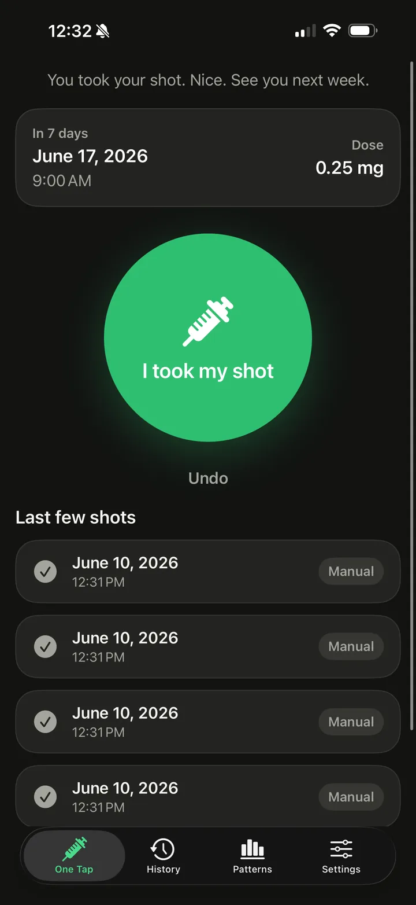

Simple GLP is a GLP-1 dose tracker app for iPhone and Apple Watch. Log a weekly shot or daily pill, keep your schedule in view, and add optional Health context when it helps.
iPhone · Apple Watch · Widget · HealthKit
Download on the App Store




Weekly GLP-1 shots and daily pills. Log the dose, keep your schedule, and add context only when you want it.
Open the app, tap the widget, or use Apple Watch to record a weekly shot or daily pill.
Set a weekly shot day or daily pill time, dose, and reminder lead time. Pill plans can include a wait timer set for your routine.
Review dose timing, notes, and schedule status. Shot logs can include an injection site; pill plans also show their wait countdown.
Read weight, glucose, activity, sleep, heart rate, workouts, water, caffeine, calories, and protein when available.
See your schedule history and timing patterns after logging a few doses. Free, no upgrade required.
A dedicated watch app puts dose logging at your wrist and keeps recent history synced with iPhone.
Export your full dose history to CSV anytime from Settings. No account, no lock-in.
Your dose history and Health context are stored locally using SwiftData and an App Group.
The pill wait countdown on your Lock Screen and in the Dynamic Island, supply tracking with a refill heads-up, and missed-dose and timing alerts.
Included with Simple GLP Pro
Yes. Simple GLP does not create accounts, sell data, or use advertising tracking. HealthKit data is read-only, optional, and used only to show your own context inside the app.
Privacy Policy →How Simple GLP is built and what it is not.
Simple GLP focuses on one practical job: record a weekly shot or daily pill and keep the schedule easy to review.
It is not a medical device and does not provide medical advice, dosing instructions, diagnosis, or treatment recommendations.
An optional upgrade for people who want to stay ahead of their schedule. Monthly, yearly, or a one-time lifetime purchase is available, with a 7-day free trial on subscriptions. Prices are shown in the app before you buy and vary by region.
Lock Screen countdown. Your pill wait timer on the Lock Screen and in the Dynamic Island.
Supply tracking. A refill heads-up before you run out.
Dose-day nudges. If a planned dose hasn't been logged a few hours after it was due, Pro reminds you before the day fully slips.
Drift alerts. Pro watches your logged timing and flags when your usual dose day starts to shift, so you can course-correct early.
Dose logging, schedule, history, insights, HealthKit context, the widget, and Apple Watch capture stay free.
| Platform | iOS 17+, watchOS 10+ |
| Language | Swift 6 with strict concurrency |
| Frameworks | SwiftUI · SwiftData · HealthKit · WidgetKit · WatchConnectivity |
| Data | Local dose history and read-only optional HealthKit context |
| Storage | SwiftData shared with widget and watch workflows through App Group |
| Widgets | Home Screen widget with interactive one-tap logging |
One tap, no app launch. The Home Screen widget records a dose directly through an interactive App Intent.
What's free. Logging, schedule, history, insights, and HealthKit context are free.
Health is optional. HealthKit access is read-only and can be skipped entirely; the core logging flow never depends on it.
Privacy. No accounts, no third-party analytics or ad SDKs. The only network activity is App Store purchase validation for Pro. Dose history lives in SwiftData behind an App Group, shared only with the widget and watch app.
Quick answers about the GLP-1 shot tracker app.
Yes. Simple GLP is free to download, and dose logging, schedules, history, insights, the widget and Apple Watch capture are free. The optional Simple GLP Pro upgrade adds the pill countdown on the Lock Screen, supply tracking and dose alerts.
Yes. Choose a weekly shot day or a daily pill time, then set the dose and a reminder lead time. Pill plans can also include a wait timer that you set for your routine.
Tap the Home Screen widget, use the Apple Watch app, or open the app to record a weekly shot or daily pill in one tap.
Yes. Each shot log can include an injection site, or you can leave it as not recorded, and you can edit entries later.
Optionally. If you allow it, the app reads data such as weight, glucose, activity, sleep and heart rate to show context next to your doses. Access is read-only and the app works fully without it.
No account is needed, and your dose history is stored on your device. You can export every logged dose to a CSV file from Settings.
No. Simple GLP is a logging tool, not a medical device, and it does not give medical advice, dosing instructions, diagnosis or treatment recommendations. Follow your prescriber for anything about your medication.
One tap to record a weekly shot or daily pill, with context when it matters.
Download on the App Store